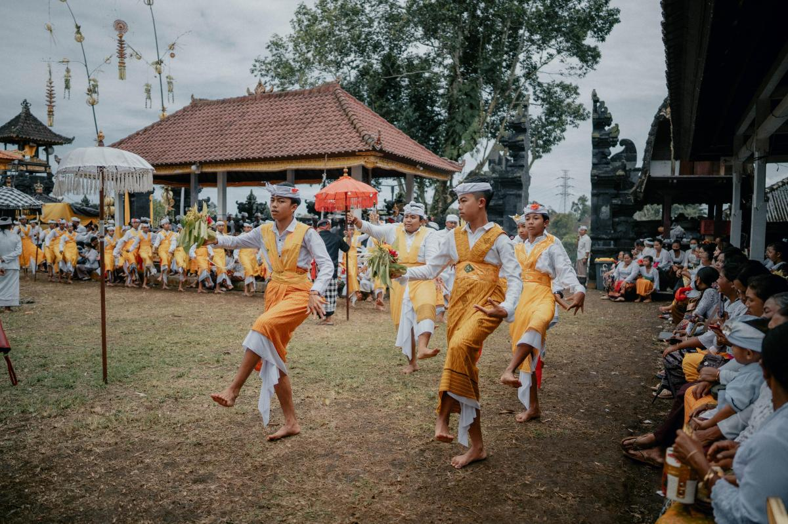
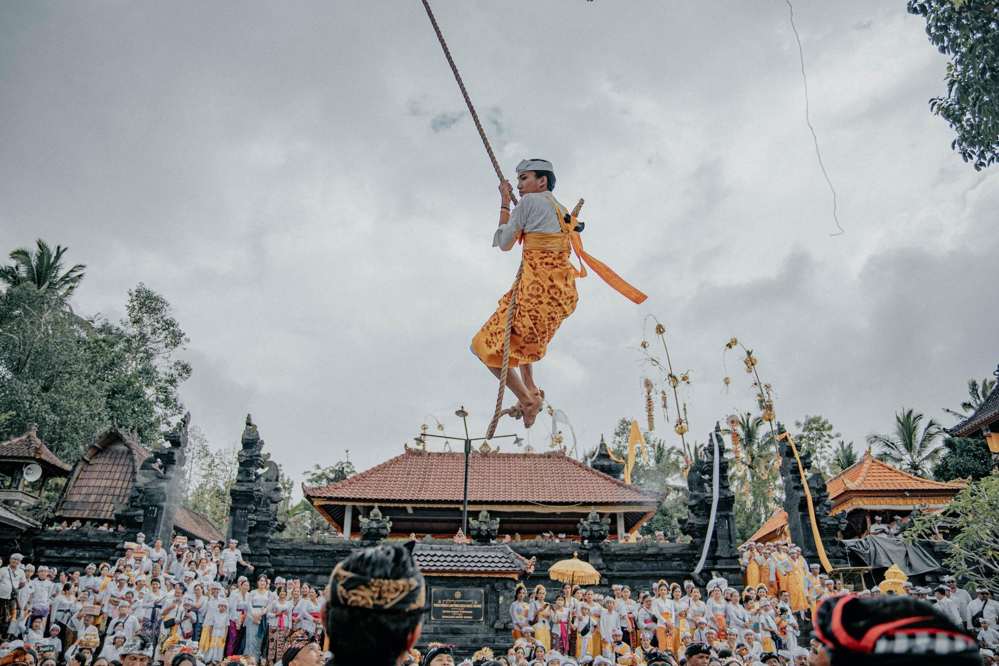
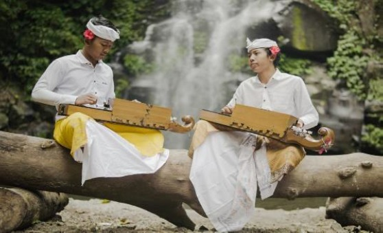
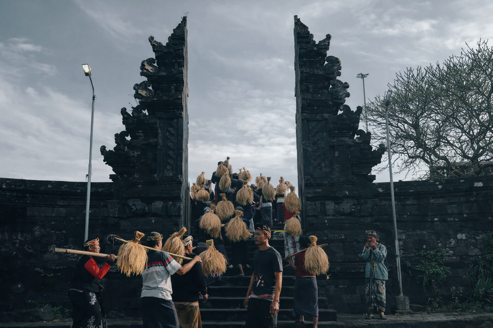
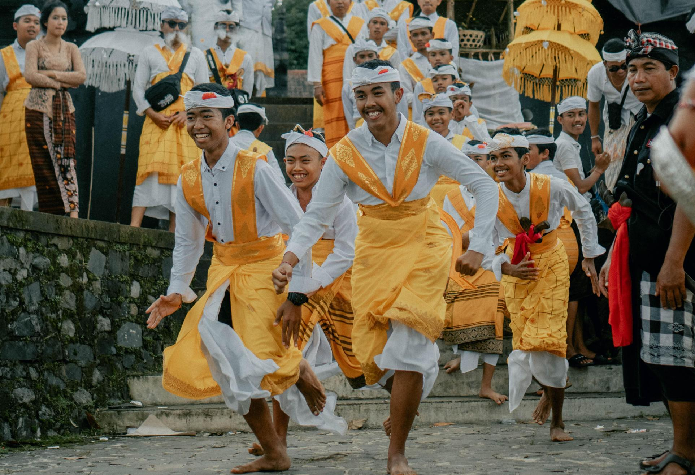
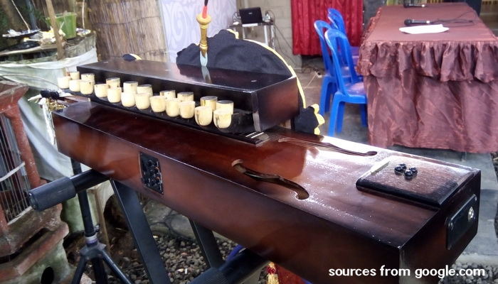
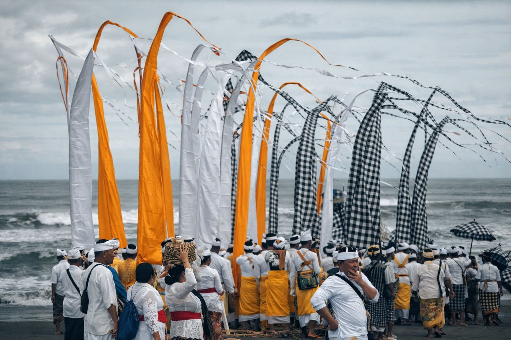

Kalangoan Catur Desa: Simfoni Tradisi dan Alam
Telusuri kekayaan tradisi serta keindahan alam yang membentuk identitas Kecamatan Pupuan
Simfoni Tradisi: Alunan Alat Musik dan Gerak Tari di Tengah Asrinya Alam
Kecamatan Pupuan dikenal dengan tradisi-tradisi unik yang mencerminkan harmoni antara manusia, alam, dan spiritualitas. Kali ini kami membahas 4 dari 14 desa di Kecamatan Pupuan yakni, Pupuan, Pujungan, Bantiran, dan Batungsel. Mulai dari tradisi, budaya, hingga destinasi wisata alam yang memanjakan mata.

Desa Pupuan
Desa Pupuan memiliki sejumlah tradisi, namun yang paling mencolok adalah tari Rejang Ayunan yang penuh makna spiritual.

Desa Bantiran
Bantiran melestarikan Rejang dengan formasi unik yang mencerminkan kesatuan komunitas.

Desa Pujungan
Memiliki salah satu alat musik yang masuk dalam warisan takbenda, hingga menjadi ciri khas Desa Pujungan.

Desa Batungsel
Batungsel menghidupkan Rejang dengan irama gamelan yang memukau dan penuh makna.
Rejang Ayunan

Rejang Ayunan Desa Pupuan & Bantiran
Rejang Ayunan merupakan tarian sakral yang penuh makna spiritual, menggambarkan harmoni antara manusia, alam, dan Tuhan.
Sejarah Panyunggalan: Desa Bantiran dan Desa Pupuan
Akar Kuno dan Jejak Prasasti
Jejak peradaban di wilayah ini bermula dari Desa Bantiran, sebuah desa kuno yang memegang peranan vital dalam tatanan sejarah Bali. Keberadaan Bantiran telah tercatat dalam berbagai prasasti penting, di antaranya Prasasti berangka tahun Saka 923 (1001 Masehi) pada masa pemerintahan Ratu Sri Gunapriyadharmapatni dan Raja Sri Dharmodayana Warmadewa.
Jauh sebelumnya, nama Nayakan Bantiran (Tetua Desa Bantiran) juga telah disebut dalam Prasasti Gobleg (Pura Batur A) pada era Raja Sri Ugrasena (915-936 Masehi). Ketangguhan masyarakatnya pun teruji dalam sejarah; pada tahun 1150 Masehi, Raja Sri Maharaja Jayasakti bahkan pernah memberikan keringanan pajak selama lima tahun bagi penduduk Bantiran yang tersisa pasca-peristiwa besar.
Lahirnya Pupuan dan Ikatan Spiritual Pura Kayu Padi
Pada mulanya, wilayah Pupuan bukanlah sebuah pemukiman, melainkan area terbuka yang berfungsi sebagai peluputan sapi (tempat penggembalaan). Hingga tahun 1988, Pupuan secara administratif dan adat masih menjadi satu kesatuan dengan Desa Bantiran.
Momentum transisi terjadi pada tahun 1988 saat terjadi pemekaran wilayah kedinasan dan adat. Pura Kayu Padi yang semula milik Bantiran diserahkan kepada Pupuan sebagai pengikat spiritual (Tetamian).
Pusaka Budaya: Tari Rejang Ayunan
Tari Rejang Ayunan diperkirakan lahir bersamaan dengan mulai terbentuknya pemukiman di Pupuan. Pementasan perdana tercatat saat upacara Ngusaba Tegteg setelah pembangunan Pura Puseh dan Pura Desa selesai. Tarian ini mencerminkan pengaruh ajaran Mpu Kuturan melalui konsep Tri Khayangan.
Sumber Informasi:
Kajian Prasasti Bali Kuno (Prasasti Saka 923, Prasasti Gobleg, Prasasti Pura Desa Sading)
Desa Pujungan

Mandolin
Desa Pujungan terdapat kesenian yang unik. Kesenian itu bernama mandolin. Alat musik mandolin dipadukan dengan gamelan dan alat musik modern seperti gitar dan bass, sehingga tercipta harmoni yang khusus.
Kini mandolin masih lestari di Desa Pujungan. Salah satu kelompok (sekha) yang masih melestarikan kesenian itu adalah Sekha Eka Mertasari.
sejarah
Sejarah Mandolin di Desa Pujungan merupakan bentuk akulturasi budaya yang unik antara tradisi Tionghoa dan kesenian lokal Bali.
Gamelan Mandolin diyakini lahir di Desa Temukus, Buleleng, sebelum tahun 1930-an. Instrumen ini awalnya diciptakan oleh warga etnis Tionghoa setempat dengan sebutan "Shaolin". Seiring dengan jalur perdagangan, kesenian ini bermigrasi ke wilayah Pupuan. Di sana, instrumen ini mulai diproduksi secara lokal oleh Pan Sekar (Alm.) dan masyarakat setempat mulai mempopulerkannya dengan nama Mandolin.
1. Perkembangan Awal di Desa Pujungan (1930 - 1965)
Masa Rintisan Pribadi (Tahun 1930)
Mandolin dibawa ke Desa Pujungan oleh para pedagang yang melintasi jalur Buleleng-Tabanan. Sosok yang pertama kali merakit instrumen ini di Pujungan adalah I Nengah Madia (Gurun Suri).Proses pembuatan dilakukan di rumah I Majar yang awal mulanya hanya untuk hiburan yang sifatnya pribadi/keluarga dan belum terbentuk dalam suatu wadah organisasi (sekha) termasuk segala peralatannya yang masih sederhana.
Setelah puluhan tahun hanya menjadi alat musik rumahan, muncul dorongan dari tokoh kesenian setempat yang optimis bahwa instrumen unik ini harus dilestarikan secara kolektif sehingga pada Tahun 1963 – 1965 dibentuklah kelompok atau Sekha Pertama, kelompok atau Sekha Mandolin pertama ini dipimpin oleh seniman bernama I Wayan Lancar (Gurun Suarti).
Di era ini, Mandolin mulai keluar dari ruang lingkup rumah tangga dan aktif dalam kegiatan masyarakat, di antaranya:
1. Menjadi media pengabdian masyarakat.
2. Memeriahkan masa kampanye partai politik (saat itu PNI).
3.Mengisi acara peringatan hari-hari besar nasional.
Meskipun sempat berjaya dan dikenal luas di masyarakat, namun Pasca-1965 kelompok ini tidak bertahan lama yang dikarenakan oleh suatu hal ekha mandolin ini sempat mengalami kepakuman dan non aktif dalam segala, ketidakaktifan yang berlarut-larut ini akhirnya menyebabkan organisasi tersebut bubar, sehingga kesenian Mandolin sempat menghilang dari peredaran publik selama hampir dua dekade (hingga dibangkitkan kembali tahun 1984).
2. Era Kebangkitan: Sekha Eka Mertasari (1984 - Sekarang)
Melihat potensi Bali sebagai destinasi wisata dunia, maka pada tahun 1984 dipelopori oleh I Made Sunita ( pada saat itu menjabat sebagai kepala dusun mertasari), maka di bangun kembali kesenian mandolin ini yang sempat tidak aktif beberapa tahun kedalam sebuah organisai/sekha mandolin yang diberi nama sesuai dengan nama dusun yaitu sekha Mandolin EKA MERTASARI yang sampai saat ini masih berdiri kokoh dengan banyak aktifitas pengabdiannya misalnya dalam :
-Aktif mengikuti kegiatan tahunan daerah bali yaitu PKB (pesta kesenian bali) tahun 1993,1994,1995 dan terahir mengikuti pameran pembangunan daerah kabupaten tabanan.
-Memeriahkan hari-hari nasional.
-Menyambut kunjungan kerja dari teras dari lingkungan department dalam negeri dan instansi lain.
-Mengisi/melengkapi upacara agama hindu dan perayaan hari-hari suci umat Hindu.
Baru-baru ini salah seorang pelaku seni yang terbilang cukup muda telah membuat inovasi baru dengan membentuk Sekhe Mandolin, perangkat yang mereka sebut dengan New Nolin. Berkat kemajuan tekhnologi yang berkembang salah seorang generasi muda yang bernama I Komang Angga Purbawa Mahasiswa ISI Denpasar yang sudah menyandang gelar S2 nya, berhasil menciptakan sebuah alat Nolin yaiu perpaduan antara Harva dengan Gitar sehingga menghasilakan suara yang khas .Sekhe Nolin itu sebagaian besar dimainkan oleh anak-anak muda dari Desa Pujungan.
3. Karakteristik Instrumen dan Teknik Permainan
Gamelan Mandolin di Desa Pujungan memiliki ciri khas teknis yang unik:
Formasi Alat: Satu set terdiri dari 6 instrumen, di mana masing-masing alat memiliki 5 buah senar.
Instrumen "Ugal": Dari keenam alat tersebut, satu difungsikan sebagai Ugal (pemimpin irama). Perbedaannya terletak pada senar tengah yang lebih besar, sehingga menghasilkan suara yang lebih rendah, tegas, dan dominan.
Anatomi Alat: Terdiri dari komponen trampa (badan) dengan resonator, lima senar, penggesek, dan panggul.
Teknik Main: Tangan kanan bertugas menggesek senar, sementara tangan kiri menekan panggul untuk menentukan nada.
Desa Batungsel
Ngusaba Ngubeng
1.Hakikat dan Filosofi Ngusaba
kata Ngusaba berasal dari bahasa Bali "Usaba" yang berarti persembahan atau upacara syukuran. Upacara ini merupakan momentum religius bagi umat Hindu di Bali untuk mempersembahkan hasil bumi kepada Tuhan (Ida Sang Hyang Widhi Wasa) serta dewa-dewa pelindung alam.Lebih dari sekadar ritual, Ngusaba adalah bentuk pemeliharaan harmoni antara manusia, alam, dan Sang Pencipta yang berlandaskan konsep Tri Hita Karana.

2.Keunikan Ngusaba Ngubeng: Tradisi yang "Pingit"
Salah satu hal yang paling menonjol dari Ngusaba Ngubeng di Desa Batungsel adalah sifatnya yang sangat sakral atau "Pingit". Hal ini ditandai dengan beberapa karakteristik khusus seperti:
A.Waktu yang Tak Menentu:
Berbeda dengan upacara tahunan biasa, Ngusaba Ngubeng dilaksanakan dalam rentang waktu 10 hingga 15 tahun sekali,masyarakat Desa Batungsel harus menunggu petunjuk dari para pemangku agar mendapatkan duwasa ayu (hari baik) karena nilai kesakralannya yang sangat tinggi.
B.Keyakinan Kental:
Masyarakat Batungsel percaya bahwa sulitnya menentukan waktu pelaksanaan adalah tanda bahwa upacara ini membawa energi spiritual yang besar dan harus dijaga kemurniannya.
Ngusaba Tabuh, Ngusaba Ngubeng, & Ngusaba Gede
selain Ngusaba ngubeng, terdapat juga ngusaba Tabuh yang di laksanakan secara serempak dengan Ngusaba Ngubeng, namun dengan lokasi yang berbeda, jika Ngusaba Ngubeng dilaksankan di Bale Agung maka Ngusaba Tabuh dilaksankan ke Pantai Soka, selain itu terdaat juga Ngusaba Gede. untuk ngusaba Gede ini dilaksankan di puncak kedaton dan Gunung tengah
3.Makna dan tujuan
Upacara yang berpusat di Pura Bale Agung Desa Adat Batungsel ini membawa misi mendalam bagi kelangsungan hidup masyarakat desa Batungsel sebagai wujud syukur yang tulus atas limpahan hasil padi serta kekayaan perkebunan yang telah dinikmati. Momentum sakral ini sekaligus menjadi ruang permohonan spiritual agar sawah dan perkebunan senantiasa dianugerahi kesuburan serta terlindungi dari segala ancaman hama maupun penyakit.
Di balik prosesinya, tradisi ini juga menjadi perekat solidaritas sosial yang kuat, di mana seluruh krama desa bersatu dalam semangat gotong royong untuk mempersiapkan sesajen dan sarana upacara secara bersama-sama. Pada akhirnya, Ngusaba Ngubeng bukan sekadar sebuah upacara rutin, melainkan manifestasi janji suci masyarakat Batungsel dalam menjaga keseimbangan alam dan keharmonisan hidup demi keberlanjutan generasi di masa depan.